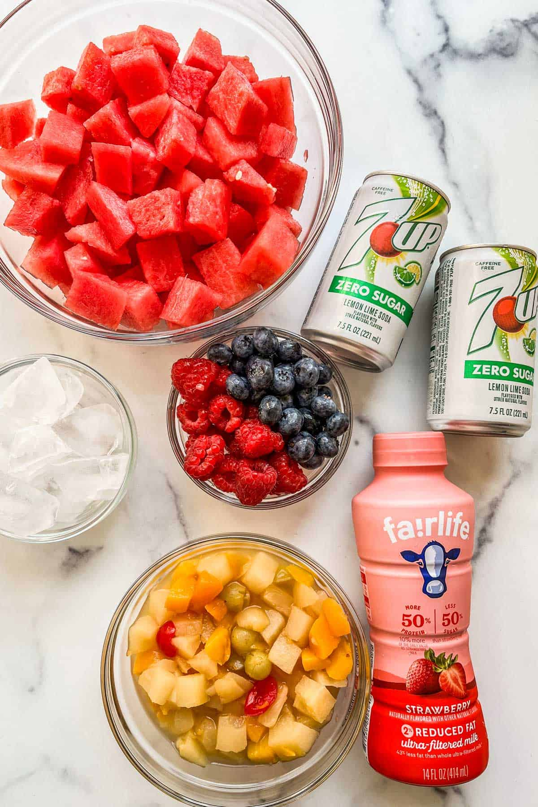
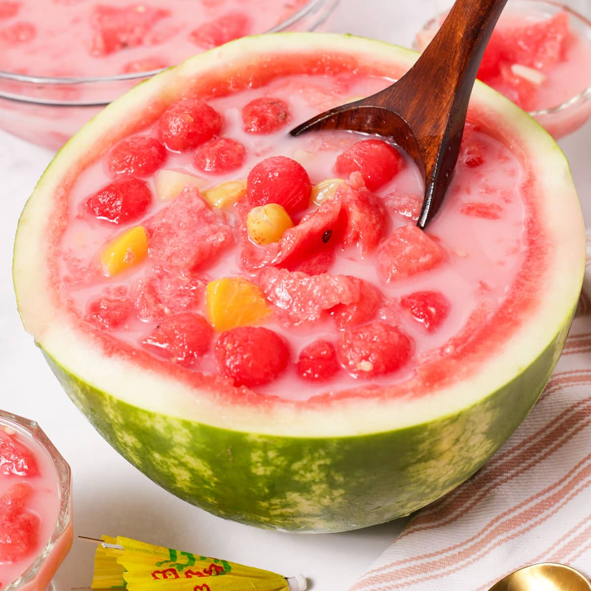

Ingredients:
- Assorted fruits (such as strawberries, pineapple, kiwi, orange, grapes)
- 2 tablespoons honey or sugar (adjust to taste)
- 2 cups cold water or sparkling water
- Ice cubes
- Fruit juice (optional)
- Mint leaves for garnish
Instructions:
- Wash and prepare the fruits. Cut them into bite-sized pieces.
- In a large pitcher, combine the cold water (or sparkling water) with honey or sugar. Stir until the sweetener is dissolved.
- Add the prepared fruits to the pitcher.
- If desired, add a splash of fruit juice for extra flavor.
- Stir gently to combine all the ingredients.
- Place ice cubes in serving glasses.
- Pour the hwachae into the glasses.
- Garnish with mint leaves.
- Serve immediately and enjoy!
Photos:

